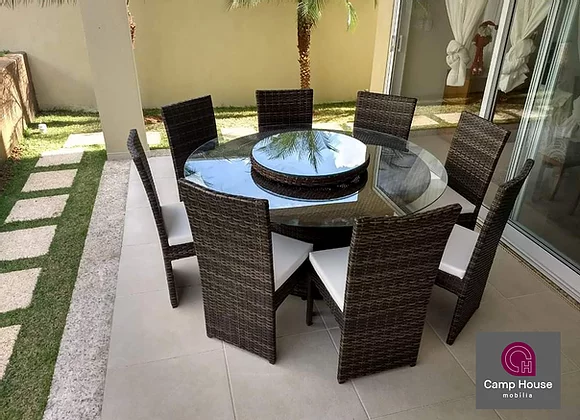
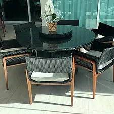
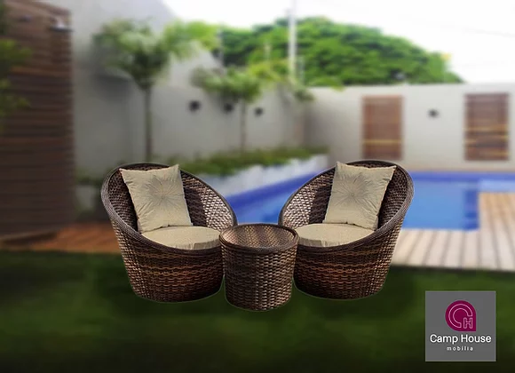
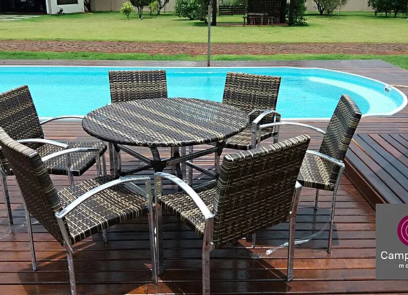
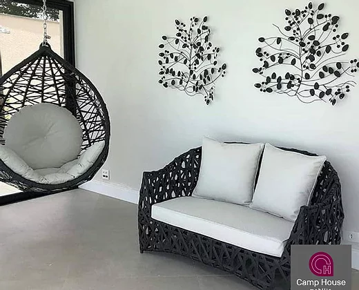
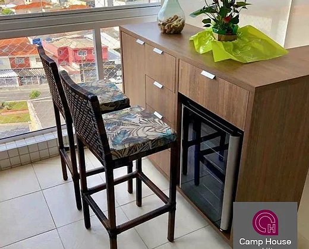
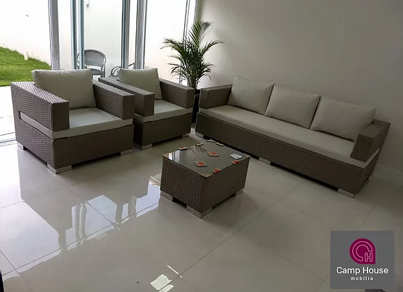

PRODUTOS
Conjunto Marrocos De Junco Com Mesa,
prato Giratório E Seis Poltronas
 Conjunto Marrocos com mesa base de 1.2m com prato
giratório com 60cm de diâmetro e seis poltronas com estofado.
Conjunto Marrocos com mesa base de 1.2m com prato
giratório com 60cm de diâmetro e seis poltronas com estofado.
Conjunto de mesa de junco base de 1.2m com prato giratório e 8 poltronas

Conjunto de mesa de junco base de 1.2m com prato giratório e 8 poltronas
Conjunto de mesa base de junco de 1.2m com prato giratório com 60cm de diâmetro e 8 poltronas com estofado.
Estrutura em alumínio reforçado e acabamento em fibra sintética de alto padrão e durabilidade
Sofá Rio De Fibra Sintética De Três Lugares,
Com Duas Poltronas.
 Sofá rio em fibra sintética com pés de madeira de três
lugares, com duas poltronas e mesa de centro.
Sofá rio em fibra sintética com pés de madeira de três
lugares, com duas poltronas e mesa de centro.
Ostra De Fibra Sintética De 1,60m De Diâmetro
Com Estofado
 Estrutura em alumínio e fibra sintética de alto
padrão de acabamento e durabilidade.
Estrutura em alumínio e fibra sintética de alto
padrão de acabamento e durabilidade.
Conjunto Ibiza De Junco Com Mesa E Seis Cadeiras

Conjunto Ibiza com mesa base de 1.2m de diâmetro com prato giratório
de 60cm de diâmetro com seis cadeiras com base em madeira e estofado.
Conjunto Bola, 2 Poltronas e 1 Mesa Centro Junco

Móveis em fibra sintética conjunto bola 1m, 2 poltronas e 1 mesa centro trama
tradicional. Estrutura em alumínio reforçado e acabamento em fibra sintética.
Conjunto De 6 Cadeiras e Mesa Moveis De Junco Sintético.

Moveis de junco sintético, rio preto trama tradicional e alumínio polido.
Estrutura em alumínio e fibra sintética de alto padrão de acabamento.
Balanço Jurerê De Junco Com Estofado Sintético

Balanço moecessita de um ponto de fixação, exemplo: pergolados ou colunas.
Estrutura em alumínio, mis leve e durável.
Banqueta Imperial De Fibra Sintética 70cm De Altura.

Banqueta imperial em fibra sintética 70cm de altura.
Estrutura em alumínio e fibra sintética de alto padrão de acabamento e durabilidade.
Sofá De Fibra Sintética Com Duas Poltronas

Sofá arco em fibra sintética de très lugares, com duas poltronas.
Braço de 15cm e mesa de centro 70x50cm, trama tradicional.